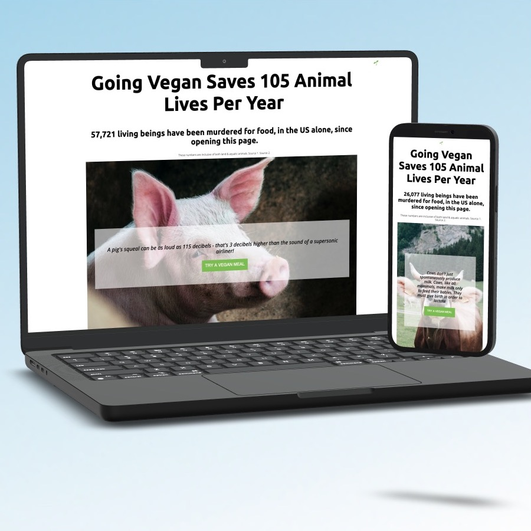
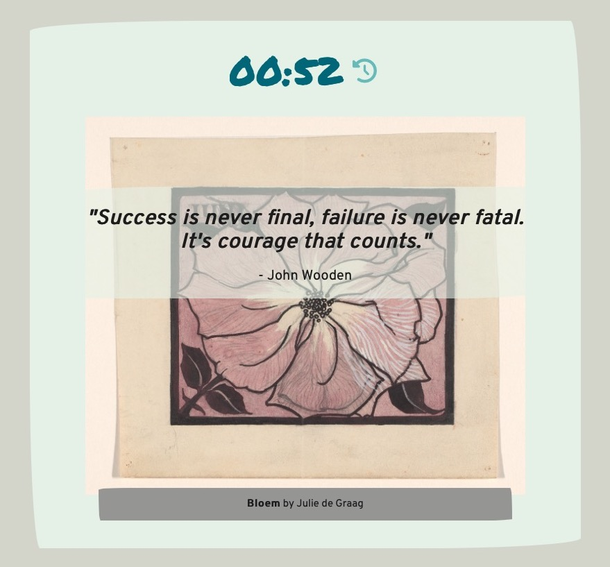

A little about me:
I'm a methodical & goal-oriented Front-end Web Developer with 5+ years experience working collaboratively on product development teams. In my heart of hearts, I'm a “keener” & a maker— after working in the fashion industry for over half a decade, my curiosity and eagerness to expand my development repertoire have made for a smooth transition from developing physical products to digital.
My tech stack includes JavaScript, CSS, HTML, & all their respective accoutrement. I create succinct, DRY code, while utilizing version control (Git & GitHub), paired programming, and project & project scope management.
I'm a big-picture thinker with an eye for design. I identify & offer forward-thinking solutions to problems while operating effectively through ambiguity, challenges, and transitions.
Things I'm passionate About:
- Problem-solving. I love diving into a good problem (whether coding, rock climbing, or board game related) & getting lost in that sweet flow state of solving!
- Cats! Well, actually all animals, but specifically cats. I have two, and their names are Xena & Rose. Together they are known as The Ladies.
- How coding is essentially a magical incantation. By typing a few key numbers & words, I create something out of nothing. Coding is magic-- I'm basically a witch!
-
Restful APIs
-
Responsive Design
-
Debugging
-
Paired Programming
-

Go Vegan
How can you tell if someone is vegan? Don't worry, They'll tell you.
Outside of tech, one of my passions is animal rights. And, in celebration of my 6 year vegan anniversary, I created this guilt-inducing app that encourages the user to go vegan. The app utilizes two APIs to fetch and display data in response to user interaction.
-

Meditation Minute
Sometimes you just need to take a minute & have a breather.
Never meditated before? Don't you worry your pretty little heart about it! All the heavy meditation lifting is done for you with this app. The app utilizes two APIs to fetch and display data in response to user interaction. This is a Paired Programing project with Rana Soyak.